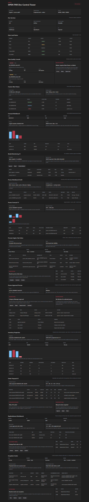

OPEN FNR Sprint 14: Exception Center V1
Аннотация: тестируем единый центр исключений: stock-out, promo shortage, supplier constraint и DQ incidents с владельцами, SLA, recommended action, linked objects, CMMN lifecycle и audit каждого действия.
UI-тестирование
- Открываем блок
Exception Center. - Проверяем фильтры Type, Severity, Owner, Status.
- Проверяем список исключений: type, severity, status, owner, recommended action.
- Проверяем linked objects: projection, order proposal, promo, DQ incident.
- Открываем action panel и проверяем Take, Resolve, Ignore, Escalate.
- Проверяем audit table: actor, action, reason.

Бизнес-процесс по шагам
| Шаг | Действие | Зачем | Результат |
|---|---|---|---|
| 1 | Система создает exception из linked object. | Исключение должно быть связано с прогнозом, промо, заказом или DQ. | Linked objects проверены. |
| 2 | DMN определяет severity. | SLA и приоритет зависят от типа и impact. | Critical/high/medium/low работают. |
| 3 | DMN назначает owner role. | Исключение должно попасть правильной команде. | Owner routing проверен. |
| 4 | Owner берет exception в работу. | Статус меняется на in_review, фиксируется actor. | Action API работает. |
| 5 | Owner resolve/ignore/escalate с reason/comment. | Каждое решение должно быть аудируемым. | Audit event создается. |
| 6 | Wrong role пытается закрыть exception. | Проверяем owner/scope based visibility. | HTTP 403. |
Автоматические проверки
| Команда | Результат |
|---|---|
python -m pytest |
109 passed |
npm.cmd run build |
Frontend build completed |